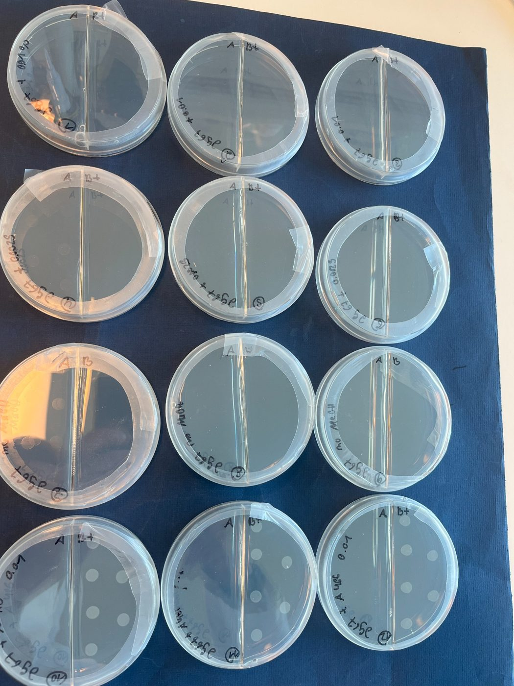
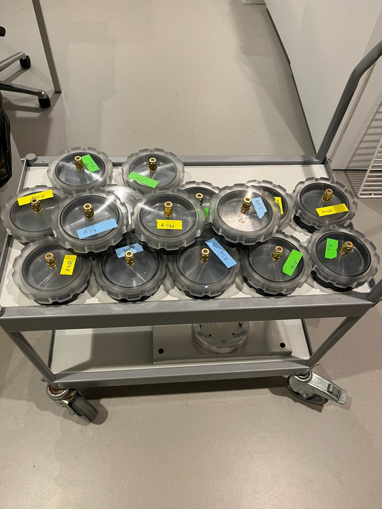

01
Lanthanides and methane-derived carbon
How does the availability of rare earth elements change methane oxidation and the transfer of methane-derived carbon among microbes?
Exploring the diversity, distribution, and interactions of microbes that are helping to reduce important greenhouse gases.
Our central question is how lanthanides redirect methane-derived carbon through microbial communities, linking trace metal availability to microbial interactions, ecosystem function and methane cycling.

We connect laboratory experiments with environmental studies to understand what controls methane consumption and where methane-derived carbon goes.
How does the availability of rare earth elements change methane oxidation and the transfer of methane-derived carbon among microbes?
We study interactions between methane oxidizers and their neighbors using model communities, cultivation and comparative genomics.
We examine how environmental change and soil conditions shape methane uptake and microbial community dynamics in forests.
We investigate atmospheric methane uptake in caves and explore methane-consuming microbes associated with air.




We welcome enquiries from prospective students and collaborators interested in methane cycling, microbial partnerships, trace metals and ecosystem function.